Analiza rješenja · JOI Spring Camp 2021 · Dan 2
Ruta bijega
O ovom članku
Tekst je prijevod službene japanske prezentacije rješenja, preoblikovan u članak. Slajdovi su ugrađeni kao slike; natpis pod svakim slajdom je prijevod teksta na njemu. Dijelovi označeni kao trenerska napomena nisu u izvornoj prezentaciji — dodani su da popune korake koje slajdovi preskaču ili samo skiciraju.
Slajdovi
Zadatak i podzadatak 1
izvorni slajdovi 1–3
-
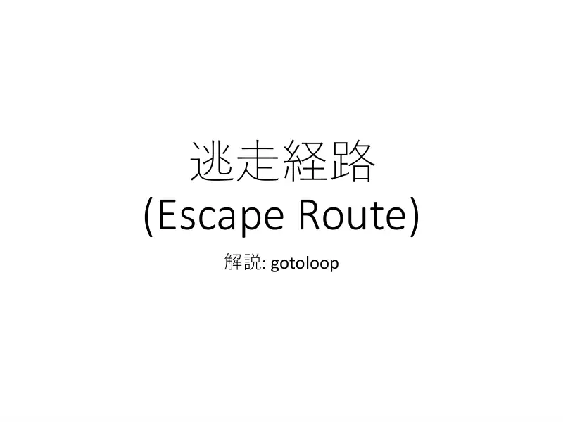
1Naslovni slajd: Escape Route; analiza: gotoloop. -
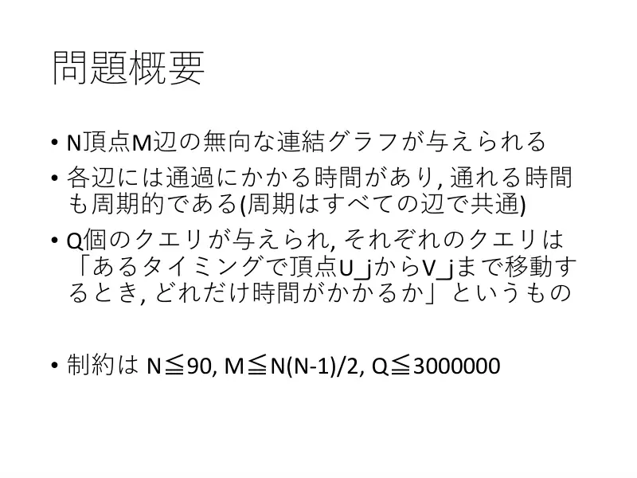
2Sažetak. Povezan neusmjeren graf, $N$ vrhova, $M$ bridova; svaki brid ima vrijeme prelaska i periodično dopušteno vrijeme (period $S$ zajednički). $Q$ upita „koliko traje put od $U_j$ do $V_j$ ako krenem u trenutku $T_j$”. $N \le 90$, $Q \le 3\cdot10^6$. -
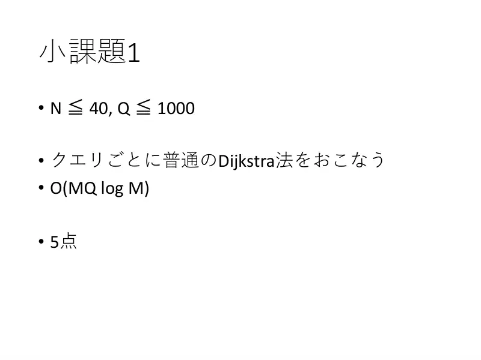
3Podzadatak 1 ($N \le 40$, $Q \le 1000$): obična Dijkstra po upitu, $O(MQ\log M)$. 5 bodova.
← → tipke ili klik na sliku
Podzadatak 2: $U_j = 0$ 20 bodova
Koraci algoritma
Modificirana Dijkstra iz jednog izvora
izvorni slajdovi 4–7
-
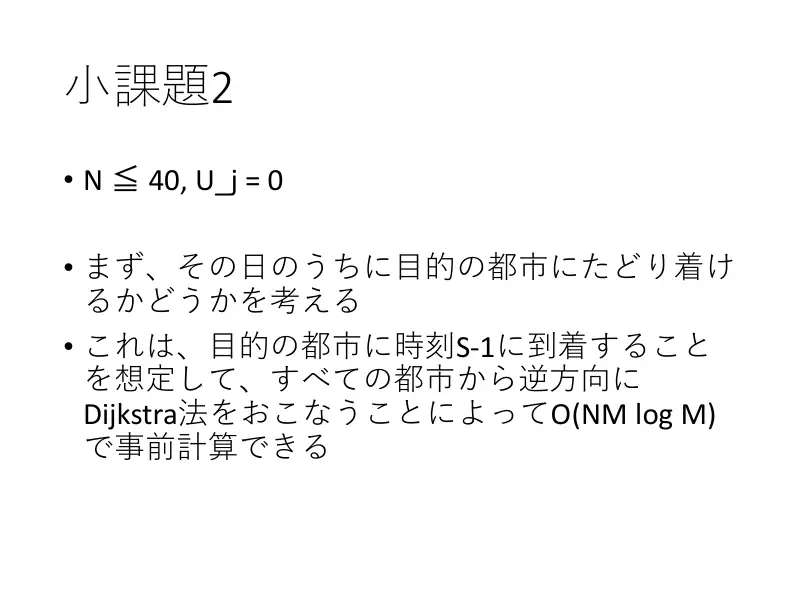
4Prvo: može li se cilj dosegnuti istog dana? Pretpostavi dolazak u cilj u $S - 1$ i vrti Dijkstru unatrag iz svih gradova: predračun $O(NM\log M)$. -
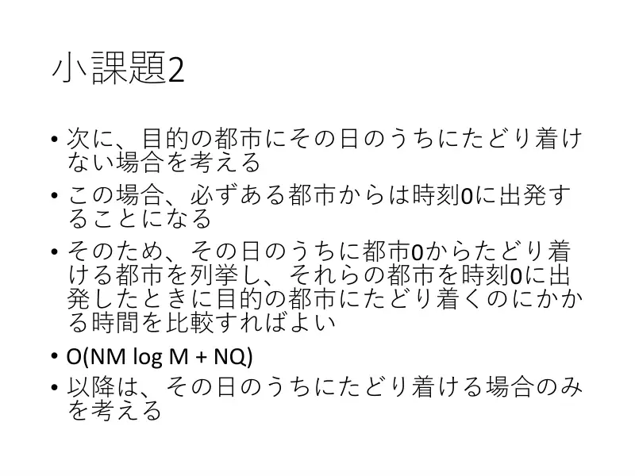
5Ako ne može istog dana, iz nekog grada kreće se u trenutku 0. Nabroji gradove dostižne iz grada 0 istog dana i usporedi vremena iz $(X, 0)$ do cilja: $O(NM\log M + NQ)$. Dalje gledamo samo isto-dnevni slučaj. -
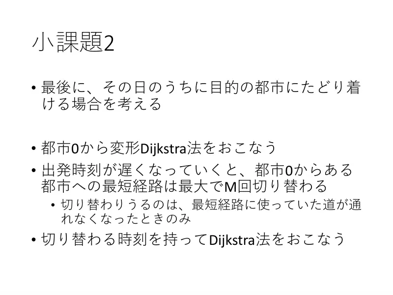
6Modificirana Dijkstra iz grada 0: kako polazak kasni, najkraći put do nekog grada mijenja se najviše $M$ puta — samo kad brid na putu postane neprohodan. Vrti Dijkstru noseći trenutke promjene. -
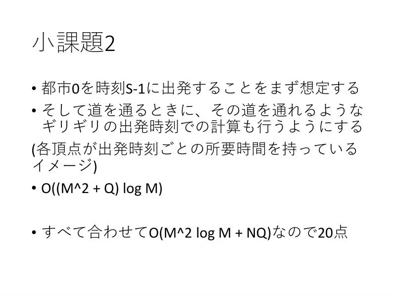
7Pretpostavi polazak u $S - 1$; pri prelasku brida računaj i „granični” polazak kojim se brid još može proći (svaki vrh drži vrijeme putovanja po polasku). $O((M^2 + Q)\log M)$; ukupno $O(M^2\log M + NQ)$ — 20 bodova.
← → tipke ili klik na sliku
Podzadatak 3 10 bodova
Slajd
Iz svih izvora
izvorni slajd 8
-
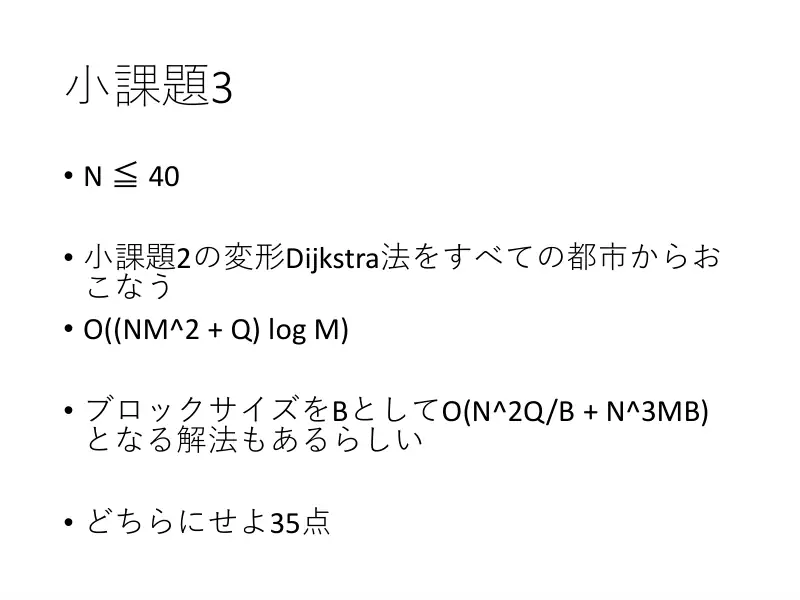
8Modificirana Dijkstra iz svih gradova: $O((NM^2 + Q)\log M)$. Postoji i rješenje s blokovima veličine $B$: $O(N^2Q/B + N^3MB)$. Oba: 35 bodova.
Podzadatak 4 35 bodova
Koraci algoritma
Kandidatne rute po bridu koji puca
izvorni slajdovi 9–13
-
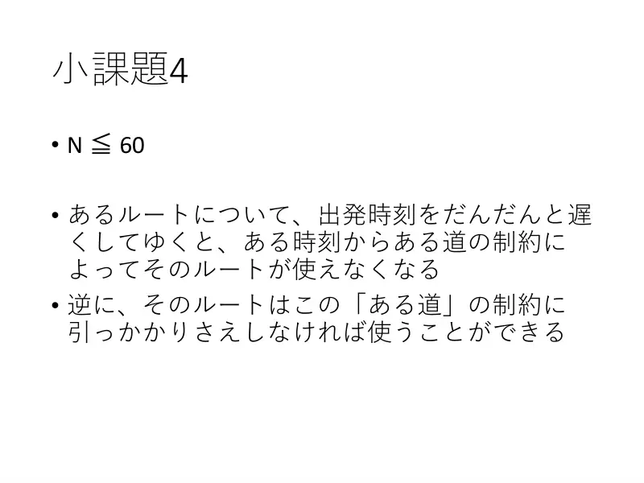
9Za fiksnu rutu, kako polazak kasni, od nekog trenutka je ograničenje nekog brida čini neupotrebljivom; obrnuto, dok taj brid prolazi, ruta se može koristiti. -
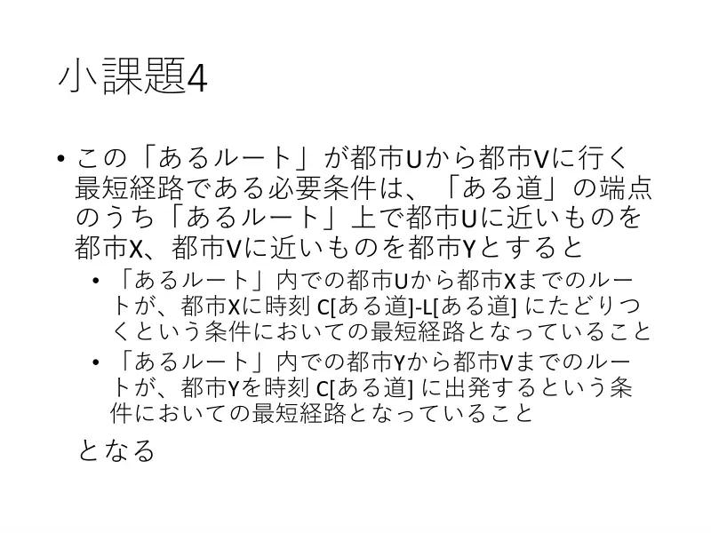
10Nužan uvjet da je ruta najkraća od $U$ do $V$: neka su $X$ (bliže $U$) i $Y$ (bliže $V$) krajevi „tog brida”. Dio $U \to X$ mora biti najkraći put uz uvjet dolaska u $X$ u $C_e - L_e$; dio $Y \to V$ mora biti najkraći uz polazak iz $Y$ u $C_e$. -
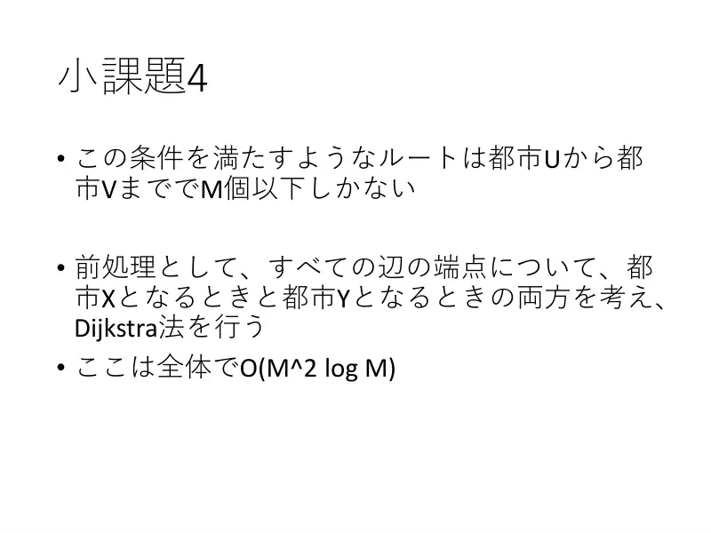
11Takvih ruta od $U$ do $V$ je najviše $M$. Predračun: za svaki kraj svakog brida, kao $X$ i kao $Y$, Dijkstra: ukupno $O(M^2\log M)$. -
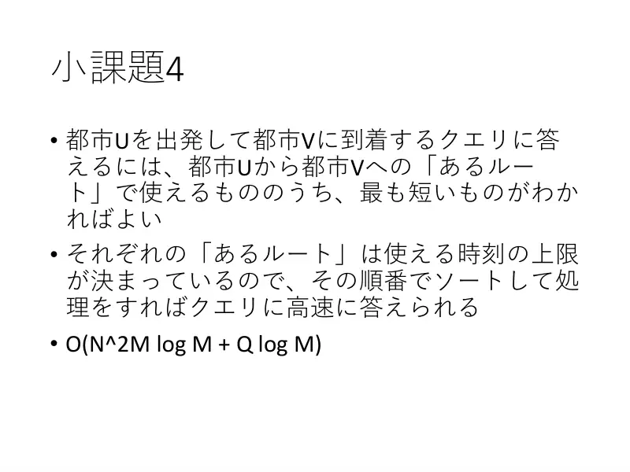
12Upit $(U, V)$: najkraća od upotrebljivih ruta. Svaka ruta ima gornju granicu polaska — sortiraj po njoj i obrađuj redom: $O(N^2M\log M + Q\log M)$. -
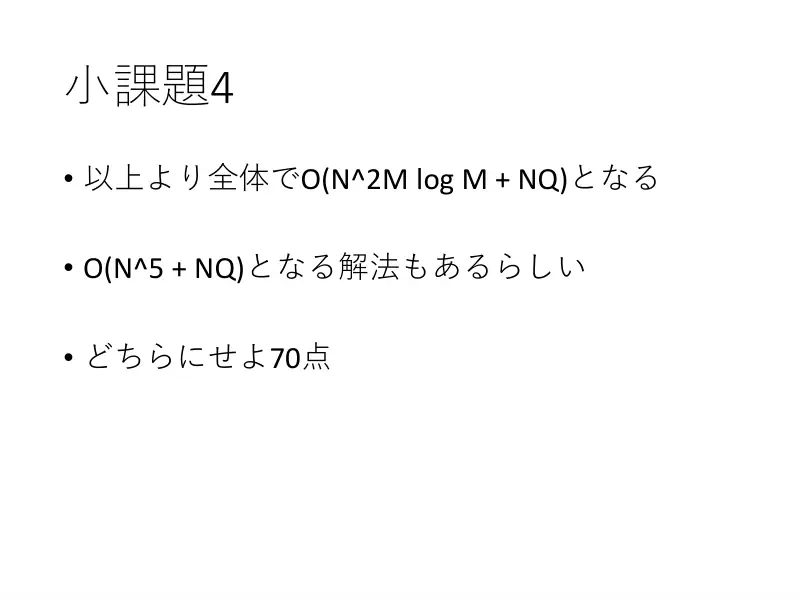
13Ukupno $O(N^2M\log M + NQ)$; postoji i $O(N^5 + NQ)$. 70 bodova.
← → tipke ili klik na sliku
Puni bodovi 30 bodova
Koraci algoritma
Skidanje logaritama
izvorni slajdovi 14–15
-
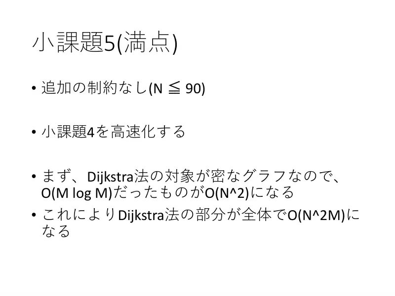
14$N \le 90$: ubrzaj podzadatak 4. Graf je gust → Dijkstra $O(N^2)$ umjesto $O(M\log M)$; sve Dijkstre ukupno $O(N^2M)$. -
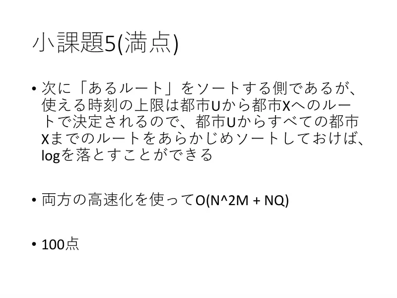
15Sortiranje ruta: gornja granica polaska ovisi samo o dijelu $U \to X$, pa za svaki $U$ unaprijed sortiraj rute prema svim $X$ — nestaje logaritam. Zajedno $O(N^2M + NQ)$. 100 bodova.
← → tipke ili klik na sliku
Sažetak
- Čekanje ima smisla samo preko ponoći; nakon ponoći sve je iz $(X, 0)$ — tablica $f(X, V)$.
- Isto-dnevni optimum je jedan od $2M$ kandidata određenih bridom koji „puca”: prag $\mathrm{lat}_e[U]$, duljina $\mathrm{arr}_e[V] - \mathrm{lat}_e[U]$.
- $4M$ Dijkstri na gustom grafu + offline sweep po $U$ → $O(MN^2 + Q\log Q)$.